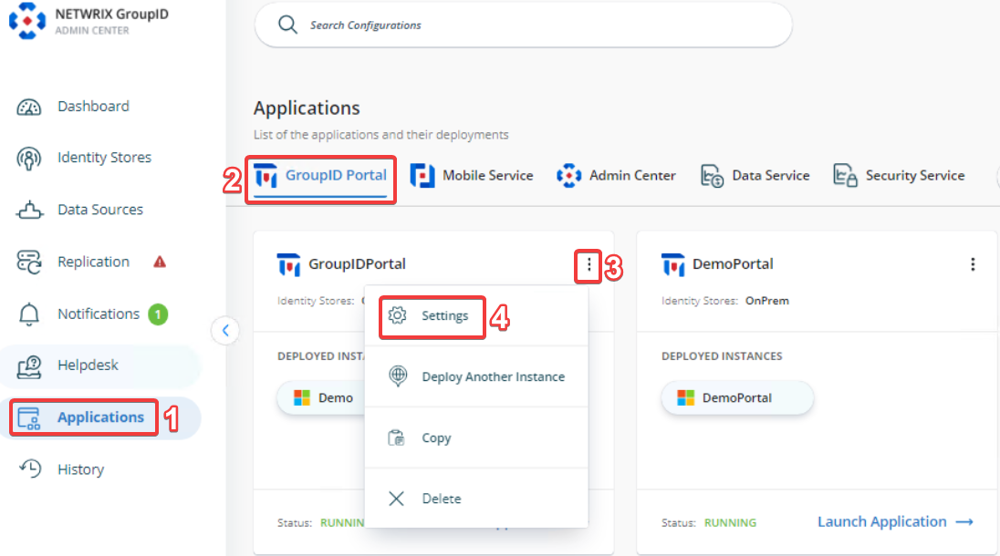
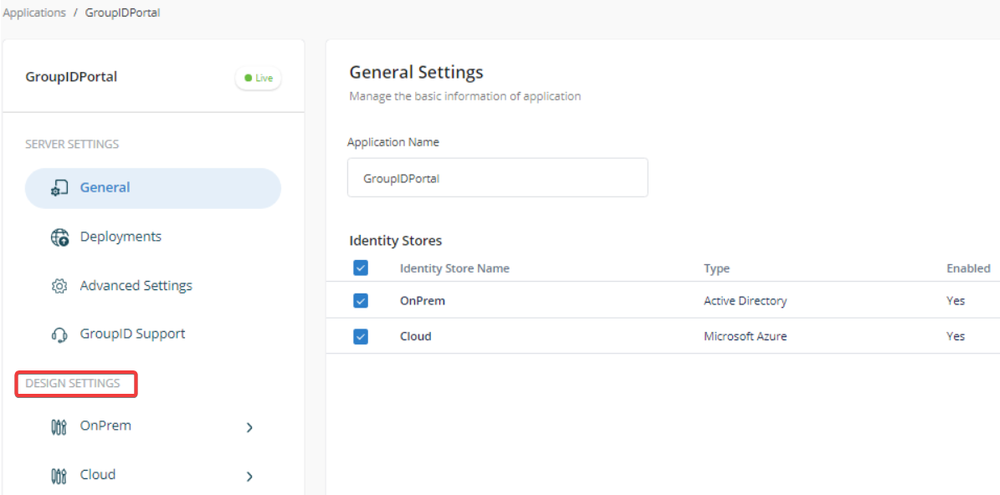

Overview
This article explains how to enforce the Group Type as Distribution in the Self-Service portal of Netwrix Directory Manager (formerly GroupID).
Directory Manager allows administrators to configure object creation settings, including the ability to customize the Create wizard, define default values, and set visibility rules based on user roles. By customizing the Create Group wizard, administrators can restrict users to creating only distribution groups, ensuring consistent group types across the directory.
Instructions
- In the Directory Manager Admin Center, go to Applications > Directory Manager Portals and locate the required portal.
- Once you have chosen the required portal, click the three-dot icon on the portal then click Settings. 
- Under Application Settings, select an identity store from the Design Settings section. 
- Click the Create Object tab.
- In the Select Directory Object list, choose Group.
- In the Name list, select General and click Edit.
- In the Edit Category dialog box, select Group Type from the Fields list and click Edit.
- In the Edit Field dialog box, click Advanced Options.
- From the Default Value dropdown, select Distribution.
-
To restrict changes to this setting, do one of the following:
- Select the Is Read Only checkbox.
- Or set the Visibility Role to Never.
- To enforce the setting for a specific role (e.g., Role C), set the visibility level to a role with a higher priority than Role C. Roles with equal or lower priority will not be able to change the group type.
- Click OK to close the dialog boxes and save your changes.
After saving your changes, the Group Type field will default to Distribution in the Self-Service portal, and users will not be able to change it. This ensures that all newly created groups are distribution lists only.